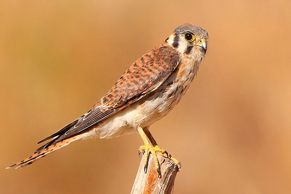

El cernícalo vulgar (Falco tinnunculus) es una especie de ave falconiforme de la familia Falconidae extendida por África, Asia y Europa, y de manera accidental en América, Caribe e Indonesia.

El cernícalo vulgar es relativamente pequeño comparado con otras rapaces, pero más grande que la mayoría de las aves. Tiene alas largas de color bermejo con manchas negras, así como una larga cola muy distintiva, gris por la parte superior y de borde redondeado y negro.
El plumaje de los machos en la cabeza es azul-grisáceo. Miden de 34 a 38 cm de cabeza a cola, y de 70 a 80 centímetros de envergadura de alas. El macho adulto medio pesa cerca de 155 g, y la hembra cerca de 190 g.
Se distingue del cernícalo primilla por ser este último de dorso pardo rojizo y sin manchas negras, con un color gris en la cabeza más uniforme y por tener en la punta de la cola unas plumas centrales que sobresalen. Además, el común tiene las uñas negras y el primilla, blancas.
El cernícalo es un ave de presa diurna y fácil de ver. Prefiere un hábitat de campo abierto y matorral. Los cernícalos nidifican en grietas de rocas o edificios, en huecos de árbol, ocupan nidos de córvidos y otras aves, pero también directamente sobre el suelo.
Entradas sugeridas: Esmerejón Halcón Alcotán